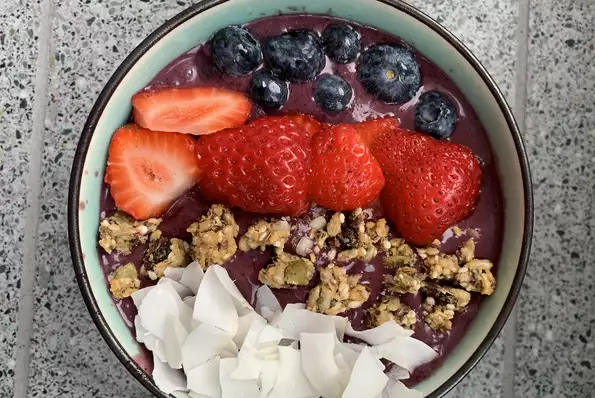

Acai Smoothie Bowl

Description
This smoothie bowl is not only so simple to make, it is also very refreshing on a warm summer day. Filled with fresh and frozen fruit, this bowl will be satisfying yet healthy.
Ingredients
- 7 oz frozen unsweetened acai pulp, partially defrosted overnight in the fridge
- 2 medium ripe frozen bananas
- 1 cup blueberries
- 3/4 cup almod milk or more as needed
- 2 tsp honey, to taste
- Optional toppings: bananas, blueberries, coconut flakes, or other fresh fruit
Steps
- Combine acai, bananas, blueberries, almond milk, and honey in a blender. Blend until smooth. Smoothie should have a thick consistency, like frozen yogurt.
- Pour into 2 bowls and top with optional toppings of your choosing. Serve immediately.